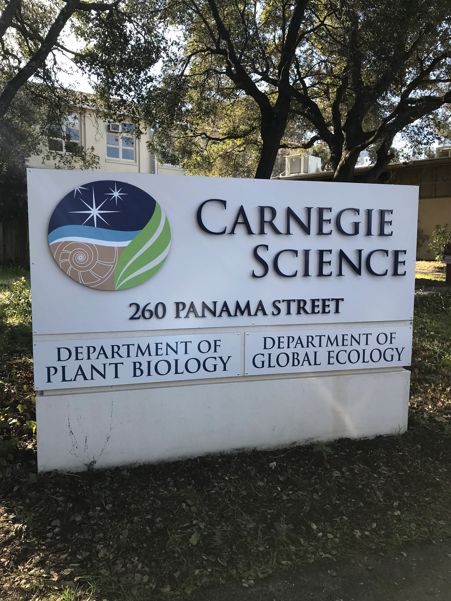
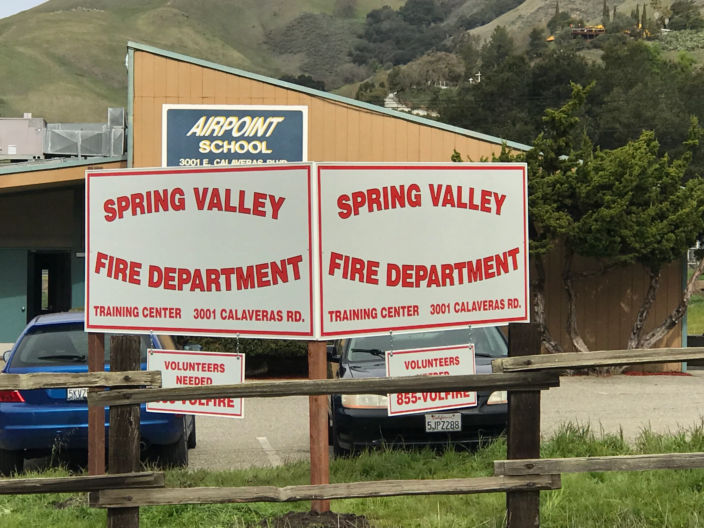
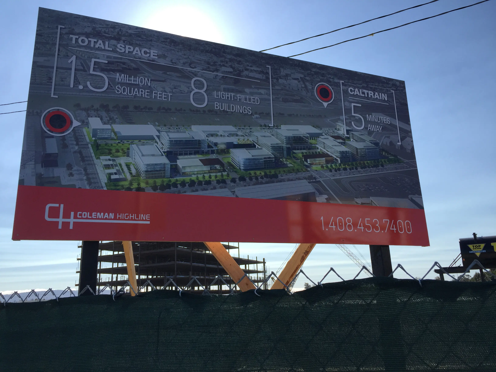
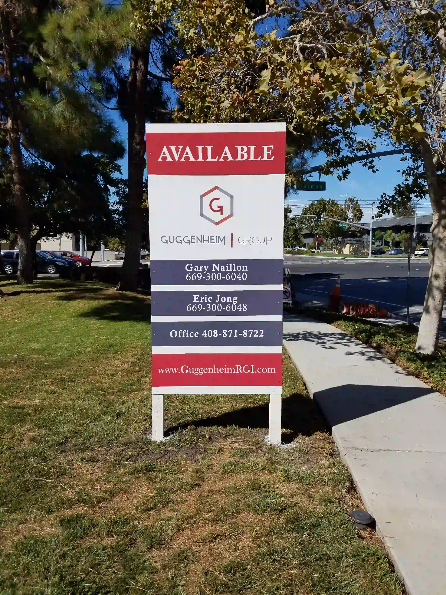

Installed Work
Exterior Signs We've Built
 Netskope · Monument Sign
Netskope · Monument Sign
Exterior Signs We've Built
Across Silicon Valley
Monument signs, post-and-panel, construction site signage, and building identification — real projects for San Jose area clients.

Carnegie Institution · Dimensional Monument Sign
Netskope · Monument Sign

Spring Valley Fire Dept · Reflective Post & Panel
Coleman Highline · Construction Billboard
Guggenheim Group · Real Estate Sign